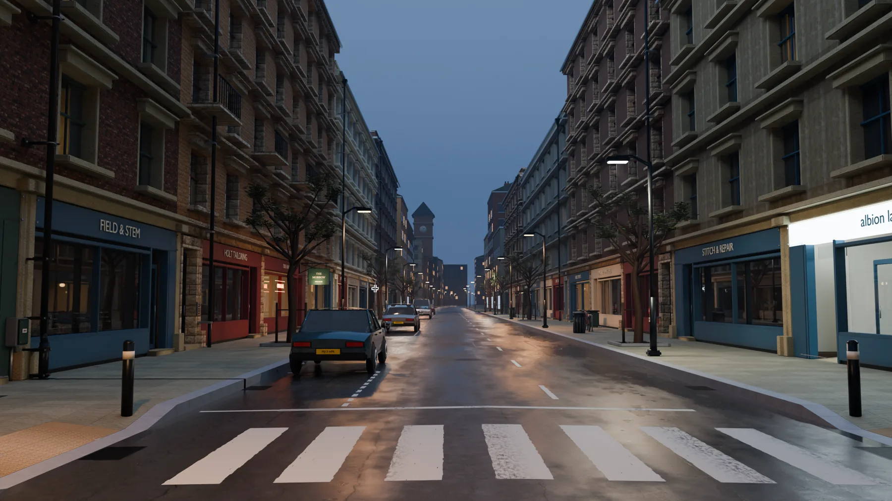
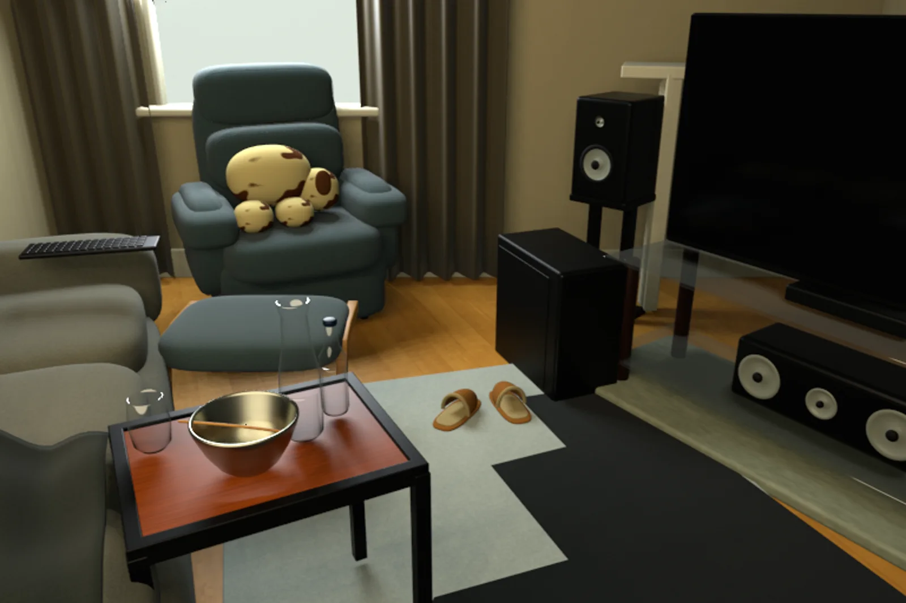
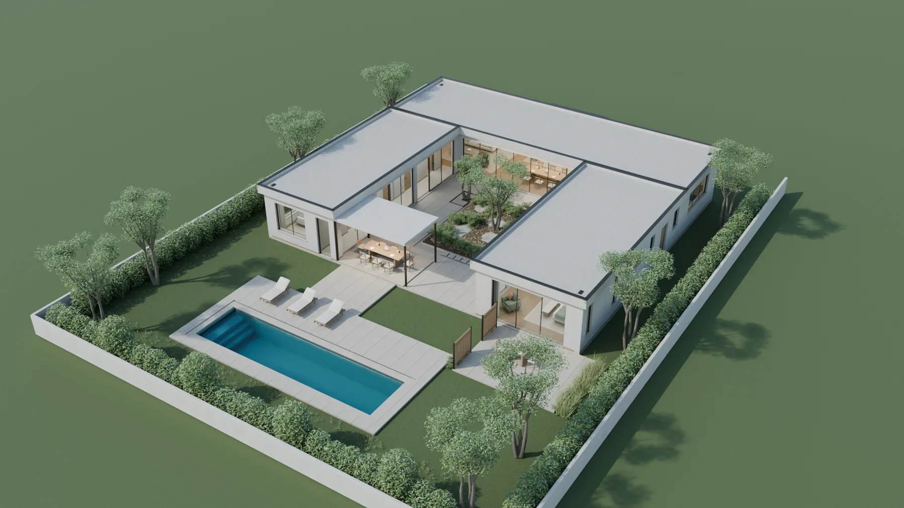

单张照片 → 场景复原
输入提供明确视觉证据。核心看输入视角是否对齐、结构与物体是否对应，以及未见区域是否只是合理猜测。
RGB 照片→分阶段建模→独立重渲染→相似度评测
CODE → BLENDER → EDITABLE 3D SCENE
两项任务、六个场景。这里分别回答两个问题：模型能否复原照片里看得到的空间， 以及能否仅凭文字从零构建具有完整尺度、材质、灯光与漫游路径的场景。



06 SCENESTWO DIFFERENT QUESTIONS
输入提供明确视觉证据。核心看输入视角是否对齐、结构与物体是否对应，以及未见区域是否只是合理猜测。
没有唯一参考答案。核心看空间规划、细节密度、材质灯光、功能合理性、可编辑性，以及达到质量所需的成本。
TASK 01 · SINGLE-IMAGE RECONSTRUCTION
三张真实室内照片分别交给同一套冻结 harness。模型只能看到一张输入图， 通过分析、blockout、相机、几何、材质和最终验证阶段生成 Blender 与 GLB。 下方展示独立 Blender 进程的重渲染，而非 agent 自报结果。
MIP-NERF ROOM · LIVING ROOM
主要增益来自正确的蓝绿色扶手椅、电视/音响关系、茶几器皿和抱枕；相机与大物体覆盖更接近输入。隐藏视角盲评为 1:2，是三例中唯一未胜出的场景。
DEEP BLENDING · PLAYROOM
墙体开口、书架、电视和贴纸布局保持得最好，获得三例最高 composite。输入视角与隐藏视角盲评均为 3:0；但反向区域依然比真实房间更空。
EYEFULTOWER · OPEN APARTMENT
视场角、吊灯、近景台面与远端工作区关系明显改善；近景电器也被补齐。亮度误差高于基线，说明提升并非单纯通过曝光匹配取得。
THE IMPORTANT FAILURE MODE
单张照片没有提供背面拓扑。模型能生成可漫游、看起来合理的补全，但三组真实 held-out 照片证明它并不能可靠恢复实际未见内容。
TASK 02 · TEXT-TO-WORLD SYNTHESIS
三个类型差异很大的 brief 使用同一套“构建 → 全判据集渲染 → 五路独立盲评 → 定位修正”循环。 输出包含完整 Blender 场景、多机位渲染与 room-tour，而不是单张概念图。
ITERATIVE SCORE TRAJECTORY
横轴改为累计 wall time，每个圆点仍是一轮完整评审。街景约 2.1 小时达到 85.5，随后再投入约 1.8 小时只提升 1.4 分；后厨在早期出现一次真实回归。
街景 / 后厨位置来自逐轮 review completion timestamps；街景 C1 是恢复 allocation 时已有的 baseline。住宅 v3 未保留逐轮时间戳，虚线依据阶段日志与 2.66 h 总时长估算。
120 米英格兰北部混合街区 · 雨后蓝调时刻
TEXT BRIEF · 摘要
两排连续临街建筑，4–6 层、27 个商业租户；面包店、洗衣店、酒吧和空置店铺作为锚点。雨后路面、独立住宅入口、车辆、自行车、公交站及可进入的店内空间，共同形成一个无人物但有生活痕迹的街区。
空间延展、材质语言和灯光全部过门槛；最终卡在“使用痕迹”12.5/15：污渍、锈迹和接触老化仍显得图形化。
60 座餐厅后厨 · 周五 20:30 服务中
TEXT BRIEF · 摘要
在 53.04 m² 内布置完整热厨线、plancha、salamander、组合烤箱、冷菜间、备餐岛、传菜口、洗锅和干货存储。场景处于服务中途，不出现人物，但需要通过食材、票据、用过的工具和清洗状态表达占用。
材质、功能逻辑、灯光与几何通过门槛；“占用感”16.5/20 和“磨损/油污”8.2/10 未过，摆放仍然过于受控。
302 m² 单层 U 形合院住宅 · 庭院与泳池
TEXT BRIEF · 摘要
围绕中央种植庭院组织 302 m² 单层住宅：北翼为客餐厨，西翼为办公室、共用浴室与两间卧室，东翼为服务空间和主卧套房；南侧设置 12×3 m 泳池、露台和分层景观。
三轮从 69.8 提升至 83.7；第 4 轮未启动，缺少最终维度评分、GLB 门禁和冷启动验收，因此是最新工作状态，不是完成结果。
COST & DIMINISHING RETURNS
构建成本不含三段视频。Cedar 只记录了 GPU 成本，故总额是下界；街景与后厨的 GPU 和 LLM 成本处于同一量级。
计价假设：输入 $3/M、缓存输入 $0.3/M、输出 $15/M、GPU $3/GPU-h。视频额外消耗 48.3 GPU-h，约 $145。
WHAT THIS EXPERIMENT ACTUALLY SHOWS
GPT-6 在三张输入图上稳定优于 GPT-5.6，几何、物体身份和材质都更接近；但未见区域没有足够证据，不能宣称真实 360° 重建。
从 53 m² 后厨到 120 m 街区，agent 能生成结构化 Blender 场景、多机位和 tour，已经超出单物体 3D generation 的范围。
街景卡在使用痕迹，后厨卡在占用感和磨损。继续增加几何不等于真实；接触老化、杂乱因果和材质变化仍是主要短板。
单图任务需要注册视角和结构指标；文本任务需要覆盖度、功能、可编辑性与成本。二者共享 harness，但目标函数不同。
EVALUATION IMAGE SOURCES
单图复原实验使用公开研究数据集中的帧；图像权利与引用归各数据集作者。生成渲染、评测文字与网页编排属于本实验输出。
RELATED PUBLIC BENCHMARKS
按输入接口和场景规模整理。优先直链官方项目页、代码与数据；标注 OBJECT-LEVEL 的项目可复用 harness 或指标，但不能直接代表完整房间 / 世界生成能力。
| Benchmark | 输入与规模 | 主要评测 | 与本实验的关系 | 官方资源 |
|---|---|---|---|---|
| TRACK 01 单图 / Agentic inverse graphics | ||||
| 3DHarnessBenchOBJECT-LEVEL | 100 个目标；单图、四视图、主动选视角、完整 3D 查询 | SigLIP-2、DINO、Chamfer、Uni3D、拓扑、延迟与成本 | Harness 权限对比最接近；目标仍是单对象，不是完整房间 | |
| BlenderBench / VIGASCENE EDITING | 目标图 + 初始 Blender 场景；相机、固定视角与探索式编辑 | Photometric Loss、VLM Score、多步任务完成度 | 闭环 render-inspect-revise 最接近；不是从零完整场景生成 | |
| ScanNet++REAL-SCENE GT | 1000+ 真实室内场景；激光扫描、33MP DSLR、移动端 RGB-D | Novel-view synthesis、3D 语义与实例分割 | 可构造真实几何 + held-out 视角的复原轨；不是现成 agent harness | |
| TRACK 02 文本 → 可编辑场景 / 动态世界 | ||||
| SceneEvalSCENE-LEVEL | SceneEval-500；文本条件室内场景 | 数量、属性、关系、支撑、可达性、碰撞、导航、越界与净空 | 当前最适合直接接入文本室内场景的语义 / 物理 evaluator | |
| 3DCodeBenchOBJECT-LEVEL | 212 类程序化对象；文本 / 图像、single-shot、multi-turn、coding agent | 可执行率、多视图相似度、3D 距离、Elo、时间、token 与成本 | 可复用执行、重渲染和成本协议；场景尺度仍需扩展 | |
| 4DBuildBench / SimWorldsSCENE-LEVEL | 文本 → 动态 4D Blender 场景 | 视觉质量、物理一致性与运行时行为 | 把静态 text-to-world 扩展到刚体、流体、粒子和关节机构 | |